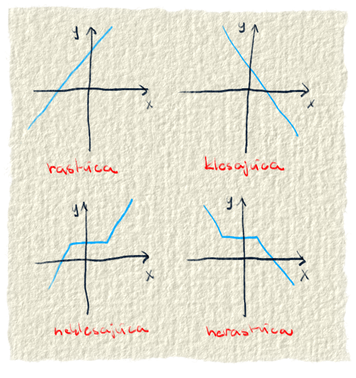

Už odpradávna pozorovali ľudia svet okolo seba. No nie len to. Svet si menili a prispôsobovali tak, aby sa im na ňom bývalo čo najlepšie. Popri tom všetkom prišli na to, že niektoré veci medzi sebou súvisia. Vzťahy medzi vecami skúmali a používali ich, aby si čo najviac uľahčili život.
Na počiatku civilizácie to neboli hneď ťažké závratné rovnice. Boli to jednoduché veci, s ktorými sa stretávali dennodenne. Ako čas plynul a ľudstvo čoraz viac spoznávalo svet okolo seba, začali nachádzať aj čoraz zložitejšie súvislosti.
Napríklad v starovekom Egypte si všimli, že čím väčšia plocha poľa, tým väčšie dane z neho treba odvádzať. Veľa vzťahov medzi vecami vyplávalo na povrch počas toho, ako ľudia medzi sebou obchodovali. Ďalšie skúmanie súvislostí priniesla astronómia. Napríklad Galileovi sa podaril opísať pohyb nebeských telies. O čosi neskôr René Descartes použil matematiku na opis jednoduchých útvarov v rovine a priestore. Dnes nám matematika opisuje rôzne vzťahy v strojárstve, medicíne, elektrotechnike, informatike, obchode a všade, kde si len pomyslíš.
Obr. 1.: Niektorými funkciami sa dá opísať šetrenie peňazí, druhými zase pohyb. Iné pomáhajú pri spracovaní zvuku a ďalšie pomôžu v biológií, napríklad pri odhade množenia baktérii.
Opisy vzťahov neboli od začiatku hneď také dokonalé, ako ich poznáme dnes. Niekedy to boli len nepresné vyjadrenia, ktoré sa približovali požadovanému výsledku. Často boli zadávané aj slovne. Postupom času sa to utriaslo a dnes môžeme povedať, že vzťah medzi vecami, kde sa jedna z nich mení v závislosti na tej druhej sa nazýva funkcia.
Funkciu si môžeme predstaviť ako taký stroj, do ktorého sa dá číslo, on s ním niečo spraví a vráti výsledok.
Matematickým jazykom je funkcia zobrazenie, ktoré každému prvku x z množiny A priradí práve jeden prvok y z množiny B, pričom platí, že A ≠ ∅ a B ≠ ∅. To znamená, že pre jedno číslo môže dať mašinka len jeden výsledok. Lebo keby ich vráti viac, čo potom? Vyberieme správny výsledok pomocou metódy ententíčky dva špendlíčky, vyletel čert z električky?
Slovný zápis sa zdal matematikom príliš dlhý, tak vymysleli skrátenú verziu zápisu funkcie
$$f: y=f(x)$$
Verzia č.2:
$$f: y→f(x)$$
Číslo x sa nazýva nezávislá premenná. To je číslo, ktoré sa pchá do funkcie. Číslo y sa volá závislá premenná. Vypočítavá sa z čísla x, teda od neho závisí. Preto sa y volá závislá premenná.
Zobrazovanie funkcií
Výsledky funkcie chceme nejako pekne zobraziť. Ak by boli čísla nahádzané na dvoch kopách, na jednej vstupy do funkcie a na druhej výstupy z funkcie, bolo by to trošilinku neprehľadné. Preto ľudia rozmýšľali nad nejakou peknou reprezentáciou funkcií, z ktorej by aj niečo vyčítali.
Napadlo im použiť karteziánsku súradnicovú sústavu. V súradnicovej sústave dali na os x vstupy do funkcie a na os y výstupy. Keď pospájali vstupy s ich prislúchajúcimi výstupmi, vznikla čiara, niekedy rovná a niekedy kľukatá. Na nej vidíme, ako funkcia vyzerá.
Okrem súradnicovej sústavy vieme funkciu zobraziť napríklad aj v tabuľke. Do horného riadku môžeme dať vstupné hodnoty a do riadku pod ním prislúchajúce výstupy. Na rozdiel od grafu, v tabuľke vidíme presné výsledky pre konkrétne vstupy. V tabuľke však nevidíme dobre, ako funkcia vyzerá.
Za zobrazenie funkcie môžeme považovať aj jej predpis. Tu síce nevidíme ani ako funkcia vyzerá a nevieme ani jej presné hodnoty, ale zato vieme, čo je funkcia zač. Predsa len v grafe a ani v tabuľke nevieme zobraziť celú funkciu, ale len jej časť. Napríklad pomocou grafu alebo tabuľky by sa nedalo povedať, či daná funkcia je sínus alebo posunutý kosínus. Vďaka predpisu "vidíme celú" funkciu a vieme vyrátať akúkoľvek jej hodnotu.Obr. 2.: Zobrazenie funkcie pomocou množín sa môže použiť napríklad pri definícií pojmu funkcia. Vďaka predpisu vidíme, čo je funkcia zač. V tabuľke sa dajú vidieť presné hodnoty. Na grafe sú zas dobre viditeľné vlastnosti funkcie (či klesá, stúpa, či má niekde ohraničenie...)
Vlastnosti funkcií
Zhruba od 17. storočia (hádam aj dodnes) začali ľudia uvažovať o vzťahoch medzi vecami ako o funkciách. Funkcia začínala byť v matematike samostatný pojem, ktorý bolo treba študovať. Pri pozorovaní funkcií, ľudia odhalili ich niektoré vlastnosti, ktoré si teraz opíšeme.
Vybrali sme pre teba týchto jedenásť vlastnosti: definičný obor, obor hodnôt, rast funkcie, monotónnosť funkcie, párnosť funkcie, ohraničenosť funkcie, minimum a maximum funkcie, periodickosť funkcie, či je funkcia prostá, či má funkcia inverznú funkciu a či je spojitá.
☑ Definičný obor:
do každej funkcie vieme napchať nejaké čísla. Niekedy vieme do funkcie hodiť všetky reálne čísla (napr. lineárna funkcia), niekedy zas iba kladné čísla (odmocnina), inokedy iba nejaký interval (nejaká špecifická). Definičný obor sú skrátka čísla, ktoré môžeme dať do funkcie. Tieto čísla ľudia umiestnili na os x. Definičný obor sa označuje ako D(f).
Obr. 3.: Definičný obor sú všetky čísla, ktoré vieme dať do funkcie. Sú to presne tie čísla, ktoré sa dajú dosadiť za premennú x.
☑ Obor hodnôt:
to sú čísla, ktoré dokáže funkcia vyprodukovať. Sú to jej výsledky. Zasa to môžu byť napríklad všetky reálne čísla (napr. lineárna funkcia) alebo iba kladné (keď umocňujeme na druhú), alebo iba interval (napr. sínus, kosínus). Nech dávame do funkcie hocijaké čísla, aké do nej môžeme dať, dostaneme vždy len číslo z jej oboru hodnôt. Obor hodnôt označujeme ako H(f).
Obr. 4.: Obor hodnôt sú všetky čísla, ktoré dokáže funkcia vyprodukovať, keď sa do nej dosadia čísla z definičného oboru.
☑Rast funkcie:
táto vlastnosť sa dá najlepšie pozorovať na grafe funkcie. Jedná sa o to, či funkcia ide hore, dole alebo je rovnaká. Vysvetlíme si každý z prípadov rastu funkcie:
- voľný preklad hovorí o tom, že aby bola funkcia rastúca, musia platiť nasledovné veci: keď zoberieme akékoľvek dve čísla z množiny A (čo je v našom prípade definičný obor) a vyrátam si pre ne výsledok funkcie, tak pri rastúcej funkcií bude mať menšie číslo menší výsledok a väčšie číslo väčší. Takáto funkcia bude mať hodnoty stále väčšie a väčšie. Rastúca funkcia ide stále hore.
- zoberieme dve čísla z definičného oboru a ak pre menšie číslo dá funkcia väčší výsledok a pre väčšie číslo menší, vtedy je funkcia klesajúca. Klesajúca funkcia ide stále dole.
- zasa zoberieme dve čísla z definičného oboru a ak pre menšie číslo dá funkcia menší výsledok a pre väčšie číslo rovnaký alebo väčší, hovoríme, že funkcia je neklesajúca. To znamená, že funkcia nerastie na celom svojom definičnom obore, ale na niektorých podintervaloch môže byť konštantná (že dáva stále rovnaké výsledky). Neklesajúca funkcia ide hore, ale nie stále. Občas môže mať aj rovnaké hodnoty, no nikdy nebude klesať.
- zoberieme dve čísla z definičného oboru a ak pre menšie číslo dá funkcia väčší výsledok a pre väčšie číslo rovnaký alebo menší, hovoríme, že funkcia je nerastúca. Ona klesá, ale na niektorých miestach je rovnaká. Nikdy nebude rásť, preto sa volá nerastúca. Nerastúca funkcia ide dole, ale nie stále. Občas môže byť aj konštantná, no nikdy nebude rásť.
Nie pre všetky funkcie vieme povedať, ako rastú. Napríklad sínus je funkcia, ktorá vyzerá ako vlnka. Občas klesá a občas rastie. Niekedy zas treba povedať iba o nejakej časti funkcie, ako rastie.

Obr. 5.: Na grafe pekne vidieť, že rastúca funkcia ide stále hore. Klesajúca zas ide stále dole. Neklesajúca funkcia ide hore, ale občas môže mať aj rovnaké hodnoty. Nerastúca ide dole, ale tiež má občas rovnaké hodnoty.
☑Monotónnosť funkcie:
súvisí s rastom funkcie. Ako už názov napovedá, táto vlastnosť sa zaoberá tým, či funkcia stále rovnako rastie. Tie najnudnejšie funkcie sa nazývajú rýdzo monotónne. Buď iba stále rastú alebo stále klesajú. Nerýdzo monotónne funkcie sú neklesajúce alebo nerastúce. Sem tam sa v nich objaví nejaká konštantnosť, ale aj tak idú stále tým istým smerom. Buď hore alebo dole. Keď funkcia občas klesá a občas rastie, tak nie je monotónna.
☑ Párnosť funkcie: funkcia môže byť párna, nepárna alebo ani jedno ani druhé.
Párna funkcia je vtedy, keď pre x aj -x dá funkcia rovnaký výsledok. Je to napríklad funkcia x2, lebo napr. (-3)2=9 a aj 32=9. Keď sa pozrieme na jej graf, tak je súmerný podľa osi y.
Nepárna funkcia je taká, že výsledok funkcie z čísla -x je rovnaký ako výsledok z čísla x krát -1. Graf takejto funkcie je súmerný podľa stredu súradnicovej sústavy. Príkladom nepárnej funkcie je y=x, lebo keď za x dáme -3, tak dostaneme y = -3 a keď za x dáme 3, tak -y = -3. Matematickými klikihákmi je to zapísané takto:
Keď funkcia nie je súmerná podľa ničoho, hovoríme, že nie je ani párna ani nepárna.
$ \forall x \in D(f): f(-x) = f(x) \Leftrightarrow párna$
$ \forall x \in D(f): f(-x) = -f(x) \Leftrightarrow nepárna$
Obr. 6.: Funkcii, ktorá ma graf súmerný podľa osi y, hovoríme, že je párna. Funkcia, ktorá má graf súmerný podľa stredu sústavy, sa nazýva nepárna. Funkcie, ktoré nie sú súmerné, nie sú ani párne a ani nepárne.
☑ Ohraničenosť funkcie:
nie všetky funkcie musia ísť z nekonečna do nekonečna. Niektoré napríklad nikdy nebudú mať záporné hodnoty, iné zasa nikdy nevylezú z intervalu napr. 1 a -1. Existujú výsledky, ktoré funkcia nikdy nedosiahne a tie ju ohraničujú.
Môžu ju ohraničovať buď iba z jednej strany (zdola alebo zhora) alebo z oboch strán (zhora aj zdola naraz). Keď ju nejaké číslo ohraničuje zdola, znamená to, že funkcia v živote nikdy nebude mať hodnoty menšie ako toto číslo. Keď je číslom ohraničená zhora, nikdy nebude dávať výsledky väčšie ako dané číslo. Sú prípady, keď je ohraničená zhora aj zdola. Vtedy dáva výsledky výlučne medzi týmito dvomi číslami.
Príklady: Funkcia x2 je ohraničená zdola, lebo nikdy nedá výsledok menší ako 0. Funkcia -1*(x2)+2 bude ohraničená zhora, lebo nikdy nedá výsledok väčší ako 2. Cez túto hranicu nejde. Klasický príklad ohraničenia z oboch strán je sin(x). Táto funkcia nedá iné výsledky ako medzi -1 a 1.
Matematikou je ohraničenie zapísané takto:
$A \subseteq D(f)$
$ \exists\ d \in R, že\ pre\ \forall \ x \in A: f(x) \geq d \Leftrightarrow zdola\ ohraničená $
$ \exists\ d \in R, že\ pre\ \forall \ x \in A: f(x) \leq d \Leftrightarrow zhora\ ohraničená $
$keď\ je\ na\ A\ ohraničená\ zhora\ aj\ zdola\ \Leftrightarrow ohraničená$
Voľný preklad hovorí, že v prvom riadku si povieme, že definícia bude platiť pre nejakú podmnožinu definičného oboru, ale môže aj pre celý. Podmnožina definičného oboru dostala meno A. V druhom riadku je napísané, že existuje reálne číslo d také, že všetky funkčné hodnoty, vypočítané z čísiel patriacich do A, budú väčšie alebo rovnaké ako toto číslo (to znamená, že funkcia je zdola ohraničená, lebo žiaden výsledok funkcie nebude menší ako d). Tretí riadok si skús preložiť sám a štvrtému hádam rozumieš :).
Obr. 7.: Keď je funkcia ohraničená zdola, nikdy nebude mať menšie hodnoty ako nejaké číslo d (na grafe vyznačené červenou bodkou). Funkcia ohraničená zhora zas nikdy nebude mať hodnoty väčšie ako číslo označené červenou bodkou. Funkcia môže byť ohraničená aj zhora aj zdola. Vtedy sa jej funkčné hodnoty budú pohybovať medzi dvomi číslami, nikdy ich nepresiahnu. Funkcia nemusí byť ohraničená vôbec. Vtedy si jej funkčné hodnoty idú od -$\infty$ po $\infty$.
☑ Minimum a maximum:
minimum - najmenšia hodnota, akú vie funkcia dať. Maximum - najväčšia hodnota, akú vie funkcia dať. Niekedy sa môže stať, že funkcia má pre viaceré vstupy minimum a maximum. Je to napríklad pri sin(x), kedy pre viacero x-ov dá funkcia 1 alebo -1 (čo je jej maximum a minimum). No a niektoré funkcie nemusia mať minimum a maximum vôbec.
Obr. 8.: Prvá funkcia je nejaký druh kvadratickej funkcie. Má maximum v červenom bode. Ako si môžeš všimnúť na grafe, žiadna hodnota nie je väčšia ako tá, ktorá je označená červenou bodkou. Druhá funkcia je nejaký logaritmus. Tu červená bodka reprezentuje minimum funkcie. Tretia funkcia je nejaký sínus. Červenými bodkami sú označené minimum aj maximum funkcie. Ako môžeš vidieť, má ich na viacerých miestach, lebo na viacerých miestach má rovnaké hodnoty. Posledná funkcia je nejaký typ lineárnej funkcie. Táto funkcia nemá ani maximum ani minimum. Naberá hodnoty od mínus nekonečno po nekonečno.
☑ Periodickosť:
keď sa funkcia opakuje, je periodická. Presnejšie povedané, keď funkcia v určitých intervaloch vracia rovnaké hodnoty. Príkladom sú goniometrické funkcie (sínus, kosínus, tangens, kotangens...).
Obr. 9.: Na prvom obrázku je tangens. Je to periodická funkcia, lebo každých 180° dáva tie isté hodnoty. Opakuje sa. Na druhom obrázku je lineárna funkcia. Tá sa neopakuje (dokonca nikdy nedá rovnaké hodnoty), tak nie je periodická.
☑ Prostá:
prostá funkcia má pre jeden x jeden y. Žiadne dve x nemajú pri prostej funkcie rovnaký y. Napríklad kvadratická funkcia nie je prostá, lebo pre dve x existuje iba jeden y (-2 aj 2 dá po umocnení 4, čiže pre x=-2 a aj x=2 dá funkcia výsledok 4. Z toho vyplýva, že funkcia nie je prostá.).Ak má funkcia pre viaceré x rovnaký y, tak nie je prostá.
Obr. 10.: Prvé dve funkcie (kvadratická a tangens) nie sú prosté funkcie. Do oboch vieme dať dve (a pokojne aj viacero) rôzne x také, že nám preň vrátia rovnaký výsledok. Tretia lineárna funkcia a štvrtý logaritmus sú prosté funkcie. Nech do nich dáme akékoľvek x, nikdy nedostaneme rovnaký výsledok.
☑ Inverzná:
jednoducho by sa dalo povedať, že je to opačná funkcia k nejakej inej funkcii. Vieme, že funkcia je vec, ktorá priraďuje číslam z definičného oboru nejaké čísla z oboru hodnôt (teda vráti výsledky pre čísla, ktoré jej dodáme). Inverzná funkcia zoberie obor hodnôt a priradí k nim čísla z definičného oboru. Áno, je to stále funkcia, len sa tu prehodili kopy čísiel. Z oboru hodnôt sa stal definičný obor a z definičného oboru sa stal obor hodnôt.
Vo vrchnej časti obrázku sú dve kopy čísiel. Jedna je definičný obor a druhá je obor hodnôt pre funkciu y = 2x + 1. Výsledky funkcie (obor hodnôt) je namapovaný na vstupy funkcie (definičný obor). To znamená, že vstup a príslušný výsledok sú spojené čiarou. Pre lepšiu predstavu je nakreslený aj graf k tejto funkcii.
Teraz príde dôležitý krok. Prehodili sme definičný obor a obor hodnôt. Na obrázku nižšie sú ďalšie dve kopy čísiel. Prvá kopa je definičný obor novej funkcie. Ako môžeš vidieť, sú v nej čísla z oboru hodnôt prvej funkcie. Na druhej kope sú hodené čísla z definičného oboru prvej funkcie. Táto kopa je obor hodnôt novej funkcie. Zasa treba pospájať čísla z definičného oboru s ich výsledkami, ale kamoši musia byť tí istí, čo boli predtým. Nemôžeme zrazu spojiť dvojku so sedmičkou, keď predtým bola spojená s päťkou.
Podarilo sa. Každému číslu z definičného oboru sme našli práve jedného kamoša v obore hodnôt. Dokonca sú spárované čísla, ktoré boli spárované aj v pôvodnej funkcii. Funkcia y = 2x + 1 teda má inverznú funkciu, lebo sa úspešne podarili vymeniť definičný obor a obor hodnôt.
Obr. 11.: Funkcia y=2x+1 má inverznú funkciu.
Dôležitá vec je, že funkcia môže mať svoj inverzný náprotivok len vtedy, keď je prostá. To znamená, že pre jeden x dá práve jeden y. Lebo keby to tak nebolo, tak inverzná funkcia by už nebola funkcia, lebo by nevedela k číslu jednoznačne priradiť výsledok.
Na nasledujúcom obrázku je nakreslené, že čo sa stane, keď sa pokúsime nájsť náprotivok funkcii, ktorá nie je prostá. Použili sme najjednoduchšiu kvadratickú funkciu y = x2. Vo vrchnej časti obrázka sú už tradične dve kopy čísiel. Jedna je definičný obor a druhá obor hodnôt. Čiarami sú pospájané vstup a prislúchajúci výstup.
Teraz zasa vymeníme definičný obor a obor hodnôt. Chceme pospájať zasa vstup a výstup. No nedá sa. Napríklad pre také číslo 4 je správny výsledok 2 alebo -2? Obe dajú po umocnení výsledok 4. A vlastne pre ktorú štvorku priradím ktorú dvojku? No nedá sa mi jednoznačne rozhodnúť a neviem nájsť správny náprotivok k funkciiy = x2. To znamená, že funkcia y = x2 nemá inverznú funkciu.
Obr. 12.: Funkcia nie je prostá a preto nemôže k nej existovať inverzná funkcia.
Napríklad kvadratická funkcia nie je prostá a preto nemôže mať inverznú funkciu. Predstavme si, že definičný obor nejakej kvadratickej funkcie bude -2 a 2. Obor hodnôt bude 4, lebo pre -2 a aj 2 dá výsledok 4. Teraz chceme spraviť k nej inverznú funkciu. Prehodíme obor hodnôt a definičný obor. Teda inverzná funkcia by mala v definičnom obore 4 a v obore hodnôt -2 a 2. No a teraz by chcela číslu 4 z definičného oboru priradiť jedno číslo z oboru hodnôt. A čo mu dá -2 alebo 2? Nedokáže si vybrať a preto to nie je funkcia. To je dôvod, prečo inverznú funkciu môžu mať iba prosté funkcie.
Typickým príkladom inverzných funkcií sú exponenciálna a logaritmická funkcia.
☑ Spojitá:
spojitá funkcia je funkcia, ktorá nemá v grafe žiadne diery. Keď vidíš graf spojitej funkcie, tak je to jedna čiara, ktorá nie je nikde prerušená. Matematicky sa dá spojitosť zadefinovať limitami, ale tým ťa trápiť nebudeme. Predpokladáme, že v čase, keď čítaš tento článok, ešte spíš v sladkej nevedomosti a nemáš ani tušenie, čo je to limita.
Spojitosť sa určuje v nejakom bode z definičného oboru. Ak je funkcia spojitá v každom bode definičného oboru, tak hovoríme, že funkcia je spojitá. Takisto môže byť spojitá len na nejakom intervale (podčasti) definičného oboru.
Matematicky sa spojitosť funkcie v bode určuje približne takto: vyber si nejaký bod funkcie, v ktorom chceš určiť spojitosť. Nazvi si ho môj bod. Teraz si predstav, že sa pomaly, bod za bodom, z oboch strán približuješ k tvojmu vybratému bodu. Funkcia je v tvojom bode spojitá vtedy, keď aj funkčné hodnoty okolitých bodov sa približujú k funkčnej hodnote tvojho bodu.
Príklad spojitej funkcie môže byť lineárna funkcia y=2x. Chceme zistiť či funkcia je spojitá v bode 10. Vieme, že funkčná hodnota v bode x=10 je y=20. Pozrieme sa na nejaké susedné body 10. Napríklad na 8, 9, 11 a 12. Funkčné hodnoty pre ne sú 16, 18, 22 a 24. Vidíme, že funkčné hodnoty sa z jednej aj z druhej strane blížia k 20. Lenže lineárna funkcia je definovaná na reálnych číslach a teda 8, 9, 11 a 12 nie sú úplne najbližšie k 10. Ešte bližšie sú napr.9,8; 9,9; 10,1 a 10,2. Funkčné hodnoty pre ne sú 19,6; 19,8; 20,2 a 20,4. Aj tu je vidieť, že sa funkčné hodnoty blížia k číslu 20. Ale ani 9,9 nie je najbližšia číslu 10. 9,99 je bližšie, 9,999 je ešte bližšie a takto by sme mohli pokračovať do nekonečna. To je niečo čo nám zastrešia limity a preto je aj spojitosť zadefinovaná cez ne.
Príkladom nespojitej funkcie môže byť funkcia, že od mínus nekonečno po 0 bude hodnota -2. V bode 0 je hodnota 1 a od 0 po nekonečno bude hodnota vždy 2. Chceme zistiť spojitosť v bode 0. Funkčná hodnota v bode 0 je 1. Z ľavej strany sú body blízke nule napríklad -0,01; -0,02. Ich funkčná hodnota je -2. Z pravej strany sú blízko napríklad 0,01 a 0,02. Ich funkčná hodnota je 2. Platí, že čím bližšie sme pri nule tak aj funkčná hodnota bodov sa blíži k funkčnej hodnote nuly? No neplatí, lebo stále sú hodnoty -2 alebo 2 a potom to zrazu skočí na 1. Preto funkcia nie je spojitá.
Obr. 13.: Prvá funkcia je spojitá, lebo graf je pekná neprerušená čiara. Druhá funkcia nie je spojitá, lebo v grafe sú diery.
Záver
Funkcia je niečo, čo zoberie číslo, niečo s ním spraví a vráti výsledok. Zvyčajne sa používa na opísanie vzťahov medzi nejakými vecami, javmi. Postupom času sa stala funkcia v matematike samostatný pojem, ktorý sa oplatilo študovať. Matematici vyzistili na funkciách ich rôzne vlastnosti a potom ich opísali. Ty sa to teraz musíš učiť. Okrem toho sa to sem-tam aj niekde použije.
Toto bol článok všeobecne o funkciách, o tom, ako fungujú, o ich spoločných vlastnostiach a o ich zobrazovaní. Konkrétne funkcie sú v samostatných článkoch. Funkcie opisujú vzťahy medzi vecami okolo nás. Môžeme povedať, že čím zložitejšia funkcia, tým menej sa s ňou priamo stretávame v bežnom živote. No nepriamo sa s každou z nich stretávame každý deň. Bez nich by neexistovali veci, ktoré dnes používame naozaj všade. Nebola by elektrika, autá, lietadlá, vesmírny výskum a bez neho teflonové panvice. Skrátka bez funkcií by si musel buď stále stáť pri panvici alebo potom drhnúť zhorený obed 😊.